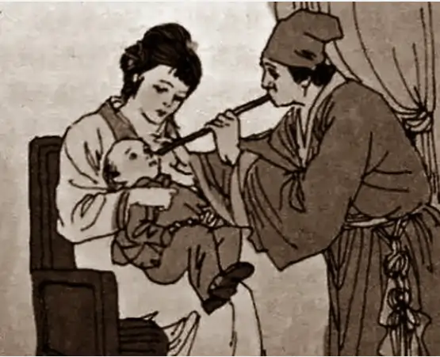

Welcome to the history of vaccination
What is Vaccination?
Vaccination is a biological preparation containing a partially killed form of a pathogen, such as a virus or bacteria. This toxin has been injected into the body for the immune system to remember the pathogen, allowing the immune system to work rapidly when it comes across the actual pathogen.
Variolation
Variolation is the process of exposing healthy individuals to smallpox scabs and cowpox scabs to provide immunity to smallpox. However, 1-3% of individuals died in the process. This type of variolation was famous in Asian countries from the early 1400s to the late 1700s.
First Vaccination
In the year 1796, the first smallpox vaccination was created by the British physician Edward Jenner. He observed that milkmaids who had been in contact with cowpox were immune to smallpox. Thus, on May 14, 1796, he performed a smallpox vaccination experiment on James Phipps, using cowpox pus from the lesions on the hands of Sarah Nelmes, a milkmaid.
First rabies vaccine
Louis Pasteur and his colleagues injected the first of 14 daily doses of rabbit spinal cord suspensions containing progressively inactivated rabies virus into 9-year-old Joseph Meister, who had been severely bitten by a rabid dog 2 days before. From this, the foundation for understanding vaccination begins, as it demonstrates the principles of vaccination.
Development of Vaccines
Over time, the development of vaccination has been very successful with the introduction of new vaccines, such as diphtheria, BCG vaccine, hepatitis B, measles, mumps, and rubella (MMR), polio, yellow fever, tetanus toxoid, HPV vaccine, malaria, Ebola, and the most recent COVID-19 vaccine. Moreover, recent technological advancements play a crucial role in the rapid development cycle of vaccinations.
Elimination Efforts
The success of vaccination has greatly contributed to the public health sector by achieving control over deadly diseases such as COVID-19 and Ebola. One of the greatest feats of vaccination is the eradication of smallpox. In 1949, the last natural outbreak of smallpox occurred, and subsequently, in 1980, the World Health Assembly declared smallpox to be eliminated.